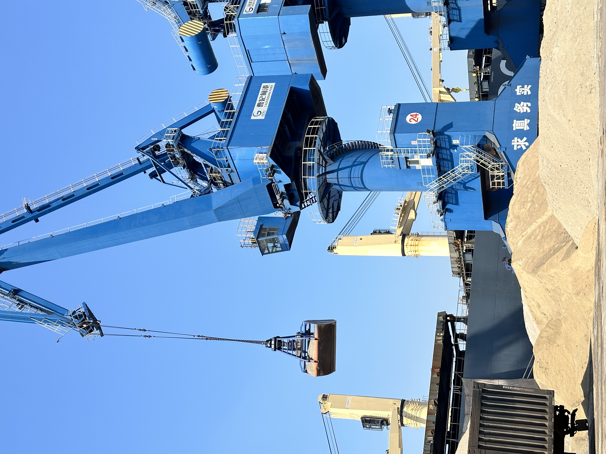

Dry Bulk Freight Is Stronger Again. Why Export Execution Matters More for Clinker and Slag
Recent dry bulk market signals point to firmer freight, tighter vessel availability and shorter planning visibility. For clinker, GBFS and other bulk cementitious exports, that raises the value of disciplined loading plans, routing flexibility and reliable port execution.
干散货运价再度走强：为什么熟料与矿渣出口更考验执行质量
近期干散货市场释放出运价更强、可用船舶更紧、前瞻窗口更短的信号。对熟料、GBFS 及其他大宗胶凝材料出口来说，这让装运计划纪律、航线灵活性与可靠的港口执行变得更重要。
Early May dry bulk coverage showed a clear change in tone. Market reports pointed to stronger freight, tightening vessel supply and faster shifts in sentiment, while commentary around bunkers and regional disruption suggested that execution risk is rising together with cost sensitivity. For exporters of clinker, GBFS and other bulk cementitious materials, this is not just a shipping headline. It directly affects quote validity, laycan confidence and cargo planning.
1. Freight strength changes the timing logic of bulk exports
A recent Bloomberg-reported move in the Baltic Dry Index to the highest level since December 2023 highlighted how quickly freight conditions can tighten when capesize demand improves and vessel supply feels less comfortable. Even when clinker or slag cargoes are not moving on the exact same vessel class, the broader market tone matters. Stronger freight sentiment usually shortens the time window for calm decision-making and increases the penalty for waiting too long on cargo readiness or fixing strategy.

2. Reactive freight markets reward exporters who can execute cleanly
Another recent dry bulk market summary described freight as highly reactive, with sentiment shifting quickly and forward visibility remaining limited. That is highly relevant for cementitious bulk trade. In this kind of market, the winner is often not the supplier with the boldest headline price, but the one who can confirm laycan, loading sequence, cargo handling method and port readiness with fewer moving parts. Clean execution reduces the risk premium that buyers and ship operators mentally add to every transaction.
3. For clinker and slag, freight is inseparable from material value
For clinker, GBFS and related supplementary cementitious materials, tradable value is shaped by more than product specification. Discharge geography, vessel size, handling losses, stockyard organization and bunker-linked shipping cost all influence the real commercial outcome. That is why recent freight and bunker commentary matters for materials trade. It reminds the market that a reliable bulk supplier is not only selling tonnes. It is also selling predictability across loading, timing and destination economics.

The takeaway is simple. When dry bulk freight firms up and planning visibility shrinks, export competitiveness becomes a combination of product, logistics discipline and timing control. For companies active in clinker and slag shipments, the market is sending a clear signal: execution quality is becoming more visible, and more commercial, than before.
5 月上旬以来，干散货市场的语气已经明显变化。多份市场信息都指向更强的运价、更紧的船舶供给以及更快变化的市场情绪；与此同时，围绕燃油与区域扰动的讨论，也说明执行风险正在与成本敏感性一起上升。对熟料、GBFS 以及其他大宗胶凝材料出口商来说，这并不只是航运新闻，而是会直接影响报价有效期、装期把握与货运安排。
1. 运价走强正在改变大宗出口的时间逻辑
近期彭博转述的波罗的海干散货指数上行至 2023 年 12 月以来高位，说明当海岬型船需求改善、可用运力感到不再宽松时，运价条件会多快收紧。即使熟料或矿渣货盘并不完全运行在同一船型上，这种更广泛的市场语气仍然重要。因为更强的运价情绪通常会缩短从容决策的时间窗口，也会放大货好时间与租船策略拖延所带来的代价。
2. 高波动运价市场，更奖励执行干净利落的出口商
另一份近期干散货市场总结把当前运价环境概括为“高度敏感、情绪切换快、远期可视性有限”。这对胶凝材料大宗贸易尤其关键。在这种市场里，真正更容易成交的，往往不是喊出最低 headline price 的供应方，而是能更少变数地确认装期、装船顺序、装卸方式与码头准备度的那一方。执行越干净，买家和船东在交易里默默加上的风险溢价就越低。
3. 对熟料与矿渣来说，运费已经很难与材料价值分开看
对于熟料、GBFS 以及相关补充胶凝材料而言，可交易价值从来不只由产品指标决定。卸港地理、船型规模、装卸损耗、堆场组织以及与燃油相关的海运成本，都会共同影响真实的商业结果。这也是近期运价与燃油评论对材料贸易如此重要的原因。它再次提醒市场：一个可靠的大宗供应方卖出的不只是吨位，更是围绕装运、时间和目的港经济性的可预期性。
结论很直接：当干散货运价走强、计划可视性缩短时，出口竞争力会变成“产品 + 物流纪律 + 时间控制”的组合。对活跃在熟料与矿渣发运中的公司来说，市场正在发出一个清晰信号：执行质量正在变得比过去更可见，也更具商业价值。